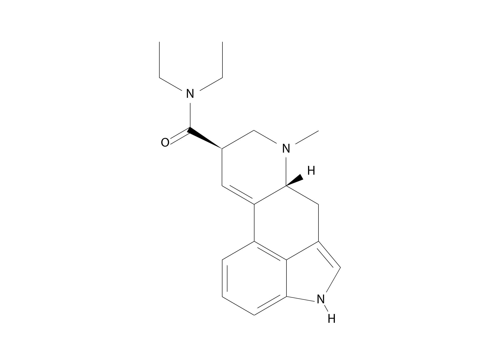
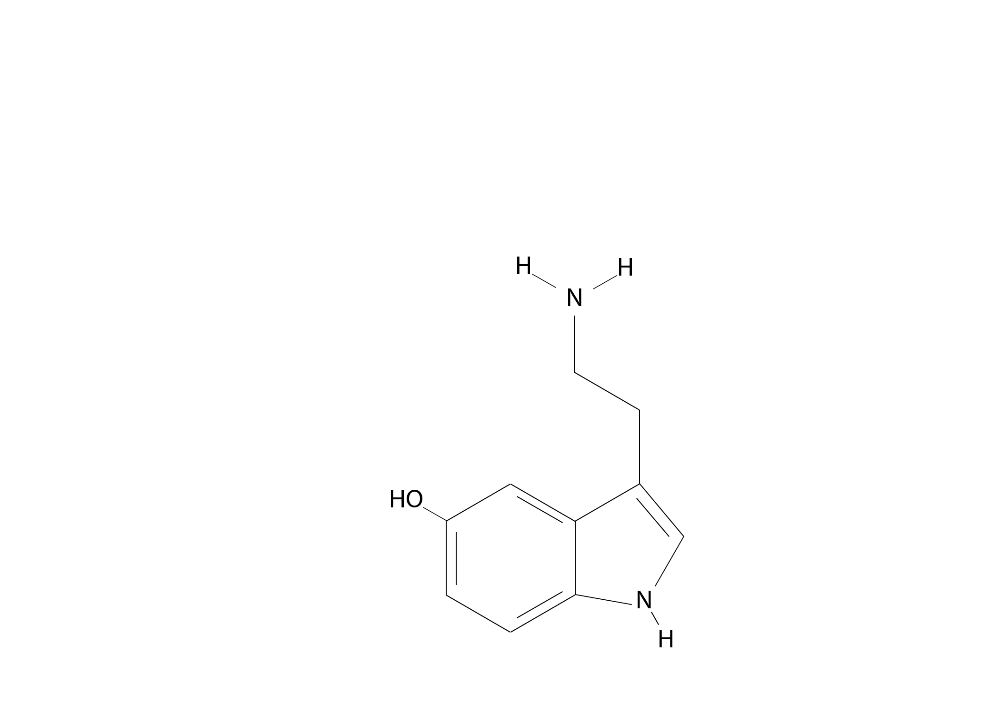
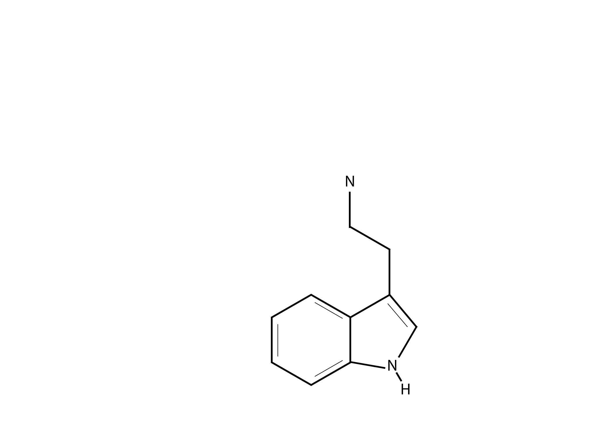
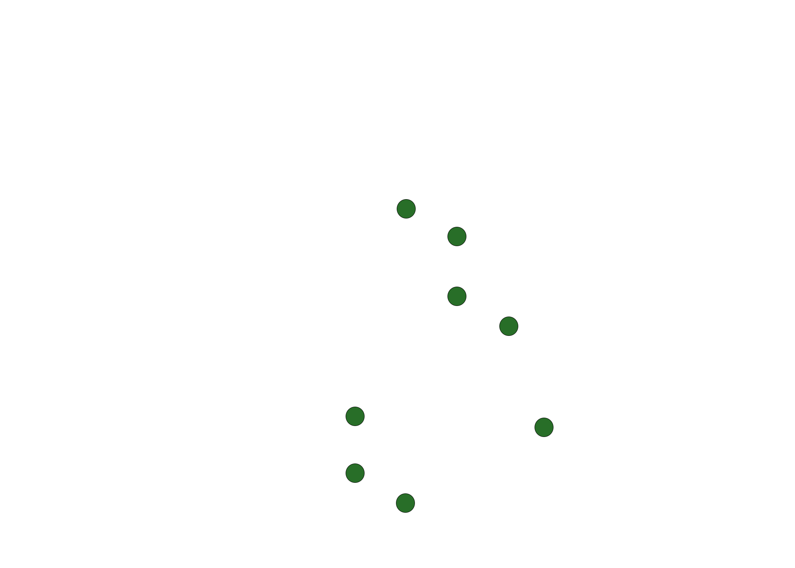

Structural Basis of Functional Selectivity in 5-HT2A and 5-HT2B Receptors
Introduction
Serotonin receptors 5-HT2A and 5-HT2B are closely related G-protein coupled receptors with highly conserved orthosteric binding sites. Despite this structural similarity, they produce distinct physiological effects and differ in their pharmacological profiles. While activation of 5-HT2A is associated with CNS effects, off-target activation of 5-HT2B has been linked to adverse effects such as cardiac valvulopathy, as observed with drugs like fenfluramine1. This raises an important question: what leads receptors with similar binding sites to express different functional responses?
Although these receptors share highly conserved orthosteric binding sites, they can produce distinct functional responses upon ligand binding. This phenomenon, often described as functional selectivity or biased agonism, occurs when a ligand preferentially stabilizes receptor conformations associated with specific intracellular signaling pathways. In the case of serotonin receptors, a wide range of exogenous ligands have been shown to engage both Gq and β-arrestin signaling to varying degrees depending on receptor subtype.2.
This project examines residue-level similarities and differences between 5-HT2A and 5-HT2B using LSD as a model ligand. By integrating structural visualization with binding and functional data, it evaluates how conserved interactions within the orthosteric binding pocket and subtype-specific differences in the extended binding region may differentially stabilize receptor conformations associated with Gprotein (Gq) versus β-arrestin mediated signaling. In this context, the analysis specifically explores how these structural features may contribute to biased agonism, where LSD exhibits pathway-dependent signaling across receptor subtypes.
Serotonin and LSD Molecular Structures
To better understand how LSD interacts with serotonin receptors, it is first useful to examine its structural similarity to the endogenous ligand.



Images created by author using Adobe Photoshop
This visualization highlights structural similarities between LSD and serotonin. The “Orthosteric Pocket Residues” view marks where conserved binding site residues (shown in green), conserved across both 5-HT2A and 5-HT2B interact with each ligand. These interactions sites cluster around shared functional groups, showing that key residues in the orthosteric binding pocket engage common structural features across both molecules, helping maintain binding affinity.
Interactive Receptor Comparison
While these similarities provide insight at the molecular level, examining how LSD is positioned within the binding pocket offers a more direct view of ligand-receptor interactions.
3D visualization rendered using NGL Viewer3. Structures shown: PDB IDs 7WC6 (5-HT2A)4 and 5TVN (5-HT2B)5.
These structures are derived from X-ray crystallography and were resolved at 2.6-2.9 Å, allowing for reliable identification of ligand-residue interactions. Residues are defined as those within 5 Å of LSD. Residues located deeper in the binding pocket primarily contribute to orthosteric ligand recognition (labeled in green). In general, those closer to the ligand’s extended moiety form an extended binding region that may influence exogenous ligand orientation and receptor activation (labeled in red/blue).
Examining LSD Binding Affinity and Functional Activity
Based on residue identification criteria, a large proportion (~70%) of LSD binding site residues are conserved between 5-HT2A and 5-HT2B receptors and are all located within the orthosteric binding pocket. These conserved residues, including hydrophobic (e.g., phenylalanine, valine) and hydrogen-bonding (e.g., serine) amino acids, stabilize the core ergoline structure of LSD and contribute to its similar binding affinity (Ki) across receptor subtypes.
| Receptor | Ki (nM) | Assay | EC50 (nM) | Emax (%) |
|---|---|---|---|---|
| 5-HT2A | 0.47–21 | IP1 formation | 0.24 | 84 |
| 5-HT2B | 0.98-30 | Ca2+ | 8 | 38 |
Sources: 6 7 8 Emax is relative to serotonin. Values are selected from representative studies using IP1 accumulation or Ca2+ release assays as proxies for Gq-mediated signaling. Results may vary depending on assay conditions.
Despite this similarity in binding, functional outcomes differ. While EC50 and Emax values suggest variability in activation, these measures are typically derived from Gq-mediated signaling assays and may not fully reflect pathway-specific activity. Notably, LSD has been shown to exhibit functional selectivity, engaging both Gq and β-arrestin pathways. At the 5-HT2A receptor this signaling has been described to be relatively balanced1, whereas at the 5-HT2B receptor, LSD has been shown to robustly recruit β-arrestin and may display pathway-dependent differences in signaling efficacy2.
This indicates that differences in ligand-receptor interactions, especially outside the conserved orthosteric pocket, likely influence how specific receptor conformations are stabilized.
Together, these findings suggest that while conserved orthosteric interactions mainly determine binding affinity, differences in ligand interactions outside this region likely contribute to the distinct receptor conformations underlying pathway-specific signaling.
Residue Differences and Predicted Binding Interactions
To further examine the basis of these functional differences, residues were analyzed in terms of their structural and physicochemical properties. Differences in the extended binding region primarily reflect structural variation between receptor subtypes, whereas only a single variation was identified within the conserved orthosteric pocket, consisting of a more subtle chemical change. Interactions were predicted based on interaction type and distance, though distances should be interpreted as approximate due to resolution limitations and the dynamic nature of receptors.
Structurally Different
| Residue | Receptor Subtype | Distance From Ligand (Å) | Predicted Interaction |
|---|---|---|---|
| Serine | 5-HT2A | 3.72 Å | Polar H-Bond |
| Cysteine | 5-HT2A | 4.70 Å | Non-specific interaction |
| Leucine | 5-HT2A | 4.91 Å | Hydrophobic |
| Glutamine | 5-HT2B | 4.48 Å | Polar H-Bond |
| Leucine | 5-HT2B | 3.68 Å | Hydrophobic |
| Glutamic Acid | 5-HT2B | 3.88 Å | Negative Ionic |
Residue data were analyzed using PyMOL9
Several subtype-specific residues introduce localized differences in polarity and charge within the extended binding region. Notably, the presence of a negatively charged glutamic acid residue in 5-HT2B, absent in 5-HT2A, creates a distinct electrostatic environment. While this residue does not interact directly with any protonated groups of LSD, it may influence ligand orientation or stabilize alternative receptor conformations. In combination with other nearby substitutions, these differences may contribute to subtype-specific signaling outcomes.
Chemically Different
| 5-HT2A Residue | 5-HT2A Distance | 5-HT2A Predicted Interaction | 5-HT2B Residue | 5-HT2B Distance | 5-HT2B Predicted Interaction |
|---|---|---|---|---|---|
| Serine | 3.81 Å | Polar H-Bond | Alanine | 3.82 Å | Hydrophobic |
Residue data were analyzed using PyMOL9
A single chemically distinct substitution was identified within the orthosteric binding pocket. This change removes a potential hydrogen-bond interaction, replacing it with a hydrophobic contact. However, given the overall conservation of the orthosteric pocket and the similar binding affinities observed between receptor subtypes, this substitution alone is unlikely to explain differences in functional response.
Conclusions
Overall, these highlighted differences do not substantially alter binding affinity, but may influence how receptor interactions are distributed across the orthosteric and extended binding regions. These subtle variations could affect the stabilization of receptor conformations associated with different signaling pathways, contributing to subtype-specific functional responses and potential signaling bias.
These findings support a structural basis for biased agonism and highlight the importance of extended binding site interactions in shaping pathway-selective receptor activation.
References
1. Rothman RB, Baumann MH, Savage JE, Rauser L, McBride A, Hufeisen SJ, Roth BL. Evidence for possible involvement of 5-HT(2B) receptors in the cardiac valvulopathy associated with fenfluramine and other serotonergic medications. Circulation. 2000 Dec 5;102(23):2836-41. doi: 10.1161/01.cir.102.23.2836. PMID: 11104741.↩︎
2. McCorvy JD, Wacker D, Wang S, Agegnehu B, Liu J, Lansu K, Tribo AR, Olsen RHJ, Che T, Jin J, Roth BL. Structural determinants of 5-HT2B receptor activation and biased agonism. Nat Struct Mol Biol. 2018 Sep;25(9):787-796. doi: 10.1038/s41594-018-0116-7. Epub 2018 Aug 20. PMID: 30127358; PMCID: PMC6237183.↩︎
3. Rose AS, Hildebrand PW. NGL Viewer: a web application for molecular visualization. Nucleic Acids Res. 2015.↩︎
4. Cao D, Yu J, Wang H, Luo Z, Liu X, He L, Qi J, Fan L, Tang L, Chen Z, Li J, Cheng J, Wang S. Crystal structure of serotonin 2A receptor in complex with LSD (PDB ID: 7WC6). Protein Data Bank. 2022. doi:10.2210/pdb7WC6/pdb.↩︎
5. Wacker, D., Wang, S., McCorvy, J.D., Betz, R.M., Venkatakrishnan, A.J., Levit, A., Lansu, K., Schools, Z.L., Che, T., Nichols, D.E., Shoichet, B.K., Dror, R.O., Roth, B.L. Crystal structure of the LSD-bound 5-HT2B receptor (PDB ID: 5TVN). Protein Data Bank. 2017. doi:10.2210/pdb5TVN/pdb.↩︎
6. Psychoactive Drug Screening Program (PDSP) Ki Database [Internet]. Chapel Hill (NC): University of North Carolina; [cited 2026 Apr 11]. Available from: https://pdsp.unc.edu/databases/pdsp.php↩︎
7. Janowsky A, Eshleman AJ, Johnson RA, Wolfrum KM, Hinrichs DJ, Yang J, Zabriskie TM, Smilkstein MJ, Riscoe MK. Mefloquine and psychotomimetics share neurotransmitter receptor and transporter interactions in vitro. Psychopharmacology (Berl). 2014 Jul;231(14):2771-83. doi: 10.1007/s00213-014-3446-0. Epub 2014 Feb 2. PMID: 24488404; PMCID: PMC4097020.↩︎
8. Wsół A. Cardiovascular safety of psychedelic medicine: current status and future directions. Pharmacol Rep. 2023 Dec;75(6):1362-1380. doi: 10.1007/s43440-023-00539-4. Epub 2023 Oct 24. PMID: 37874530; PMCID: PMC10661823.↩︎
9. Schrödinger, LLC. The PyMOL Molecular Graphics System, Version 3.1.0.↩︎